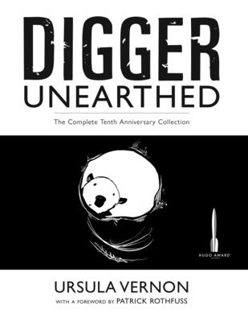

"Digger Unearthed: The Complete Tenth Anniversary Collection"
- Read on 2023-01-09
- Rating: ️️️️️
- Format: 📖 (800 pages)
This is a graphic novel. One that deserves to be called that, coming in at 790 pages. I bought it on a whim, and enjoyed it. While I don't have anything against the book, I also don't have a lot to say for the book. Maybe because I'm not a regular graphic novel consumer. It's an entertaining story of a wombat in a foreign land, trying to find her way home. Digger herself is a fun character - relatable in many ways. I enjoy the side-notes she makes as the story is told, and my heart goes out to her in her adventure. And to Ed. I'll be interested to revisit this one, with an eye on the illustrations themselves, now that I'm familiar with the story. While some of them stood out originally (with some great lighting in this purely black and white book), I know I didn't fully appreciate them.
- Prior: The Bands of Mourning
- Next: The Lost Metal